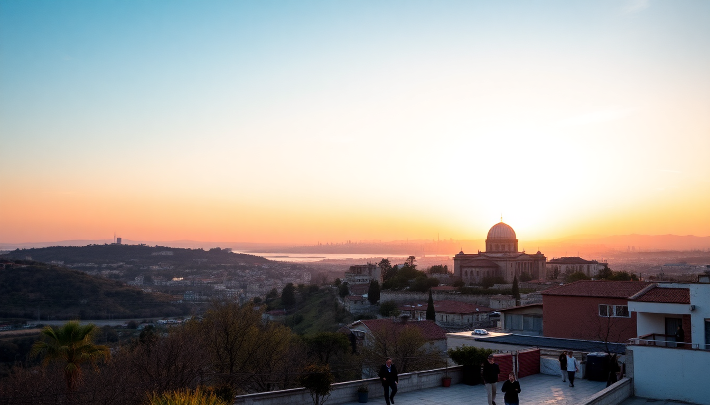

Best Time to Visit Turkey: Month-by-Month Guide

I’ve been to Turkey three times now, and each trip felt like a completely different country depending on the season. Sweltering in Antalya in August is a world away from sipping çay in a sweater in Istanbul’s October drizzle. This guide breaks down what you’ll actually deal with month by month in three key spots: Istanbul, Cappadocia, and Antalya. No fluff, just the real trade-offs.
When is the best time to visit Turkey overall?
For my money, late April through early June, and then September through October, are the sweet spots. You get mild weather, manageable crowds, and prices that haven’t hit peak summer insanity. I’ve done both May and October trips, and they’re nearly perfect.
- Istanbul in May: tulips still out in Gülhane Park, short sleeves, but you’ll want a light jacket at night.
- Cappadocia in October: crisp mornings for the balloon ride over Göreme, then warm enough for a hike through Love Valley by noon.
- Antalya in late September: the sea is still bath-warm at Konyaaltı Beach, but the sun won’t melt you walking along Kaleiçi’s cobblestones.
Avoid July and August unless you love sweating in line at the Hagia Sophia or paying double for a room in Sultanahmet.
What is Istanbul like in winter (December to February)?
Cold, wet, and surprisingly empty. I went in January once and had the Basilica Cistern almost to myself. The city feels more local—less tourist tat, more real life.
- December: Christmas lights in İstiklal Street, but expect rain. The Spice Bazaar (Mısır Çarşısı) is cozy and less crowded.
- January: coldest month. We stayed at Hotel Arcadia Blue near Sultanahmet for the rooftop view of the Hagia Sophia—totally worth it, even in fog.
- February: still chilly, but the first almond blossoms appear in Emirgan Park. Ferry rides across the Bosphorus are raw and beautiful, but wrap up tight.
Downside: balloon flights in Cappadocia get cancelled often in winter. I lost two mornings in a row to fog at Mithra Cave Hotel in Ürgüp. If you’re set on that sunrise photo, don’t come in January.
How is Cappadocia in spring (March to May)?
Spring is when Cappadocia wakes up. March is still hit-or-miss with rain, but by April the valleys are green and the balloons fly reliably.
- March: still cold, but fewer tourists. We hiked Rose Valley and saw maybe five other people. Pack layers.
- April: peak wildflower season. The Göreme Open Air Museum is less packed, but bring a rain jacket for sudden showers.
- May: perfect. We did the Ihlara Valley hike in a t-shirt. Balloons fly almost daily. Book your cave room at Sultan Cave Suites well ahead—it fills up.
One warning: the Kızılçukur Sunset View gets mobbed in May. Go an hour before sunset and you’ll still find a good spot, but don’t expect solitude.
Should you visit Antalya in summer (June to August)?
Only if you’re a beach person who doesn’t mind heat. Antalya in July is a furnace—40°C (104°F) is normal. The upside? The sea is perfect.
- June: still tolerable. Lara Beach is buzzing but not insane. Dinner at 7 Mehmet in the city center is a must for their kebabs.
- July: brutal midday. We hid in the Antalya Museum (air-conditioned and excellent) from noon to 3 PM. Then hit Konyaaltı Beach for a swim.
- August: peak European holiday season. Prices at Tuvana Hotel in Kaleiçi triple. The old harbor is a zoo. If you can, skip August.
Pro tip: rent a car and drive to Olympos or Çıralı Beach—less crowded, and you can see the Chimera flames at night.
What’s the deal with autumn (September to November)?
Autumn is my favorite season in Turkey. The summer crowds thin out, the sea is still warm in Antalya, and Istanbul gets a golden light that makes the Galata Tower look like a painting.
- September: Antalya is still summer-lite. We swam at Kaputaş Beach (a 45-minute drive) and had the water to ourselves on a weekday.
- October: Istanbul’s Grand Bazaar is manageable. I bought a kilim at İznik Works without the usual haggle frenzy. Cappadocia is stunning—the vineyards around Uçhisar turn red and orange.
- November: cooler, but cheap. We got a room at Hotel Empress Zoe in Sultanahmet for half the August price. Rain returns, but so do the empty streets.
One letdown: the Whirling Dervish ceremonies in Istanbul’s Galata Mevlevi House get packed in October. Book tickets online a week out.
Can you visit Turkey in December for holidays?
Yes, but manage expectations. Istanbul does have a festive vibe—İstiklal Street strings lights, and the Bosphorus Christmas cruise is a thing (though Turkey isn’t a Christian country, so it’s more commercial than religious).
- New Year’s Eve: big deal in Istanbul. We watched fireworks over the Bosphorus from a rooftop bar in Beşiktaş. Book dinner at Mikla months ahead—it’s touristy but the view is legit.
- Cappadocia: cold, quiet, and magical if you get snow. We stayed at Kelebek Special Cave Hotel and had the fairy chimneys dusted white. But again, balloon cancellations are common.
- Antalya: mild (15°C/59°F), but many beachfront hotels like Rixos Downtown have indoor pools. It’s a ghost town compared to summer.
Not great for a beach holiday, but fine for a city break if you pack layers.
FAQ
Is Turkey too crowded in summer? Yes, especially in Istanbul’s Sultanahmet district and Antalya’s beaches. The Hagia Sophia line can hit 90 minutes in July. If you go, book skip-the-line tickets or visit at opening (8:30 AM). Cappadocia’s balloon rides sell out weeks in advance—I saw people turned away at Göreme Balloons in August.
What month has the best balloon weather in Cappadocia? May and September. I’ve flown in both months—clear skies, light wind, and a 90%+ flight rate. Winter (December-February) is risky; I lost two bookings in January. Summer mornings are fine but hot by 9 AM.
Should I avoid Ramadan in Turkey? No. Ramadan (dates shift yearly) means some restaurants close during daylight in conservative areas, but tourist spots in Istanbul, Cappadocia, and Antalya stay open. Iftar (the evening meal) is a fantastic experience—we joined locals at a street table near Eminönü Pier for fresh fish sandwiches. Just don’t eat or drink openly on the street during fasting hours out of respect.
Conclusion
- Best overall: May and September—mild weather, fewer crowds, reliable balloon flights in Cappadocia.
- Best for budget: November and March—cheap hotels, empty sites, but pack for rain and cold.
- Best for beaches: June or September—warm sea without July/August heatstroke.
- Best for Istanbul city breaks: April, October, or December—manageable crowds and good light for photos.
- Avoid: July and August unless you thrive in heat and crowds—prices spike, and patience wears thin.